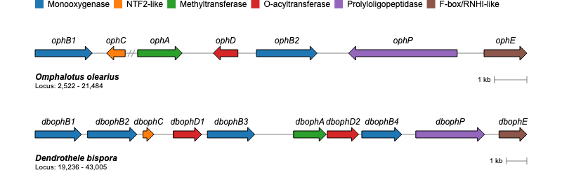
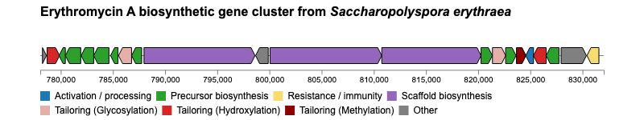
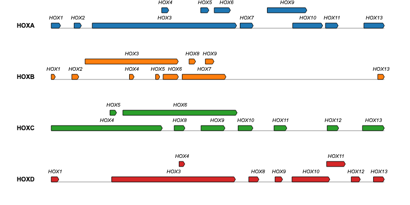

geneviewer - Gene Cluster Visualizations in R
geneviewer
geneviewer is an R package designed for visualizing gene clusters. It can import data directly from GenBank, GFF, BED and FASTA files, perform BlastP alignments between clusters and visualize the results in gene arrow maps. In addition there are extensive options to customize the gene arrow maps such as adding a legend, labels, links, annotations, customized scales, colors, tooltips and much more. To explore all features visit the package website.
Installation
geneviewer is still in the development stage which might lead to breaking changes and thus not yet released on CRAN. You can install the development version from GitHub with:
# install.packages("devtools")
devtools::install_github("nvelden/geneviewer")Usage
The below example demonstrates using geneviewer to plot a gene cluster on a genomic sequence, using the start and end positions of each gene. The genes are grouped by class and labels are added using the GC_labels function.
library(geneviewer)
# Data
gene_cluster <- data.frame(
name = c("ophB1", "ophC", "ophA", "ophD", "ophB2", "ophP", "ophE"),
start = c(2522, 5286, 9536, 12616, 13183, 19346, 20170),
end = c(4276, 4718, 10904, 11859, 15046, 16016, 21484),
class = c("Monooxygenase", "NTF2-like", "Methyltransferase",
"O-acyltransferase", "Monooxygenase", "Prolyloligopeptidase",
"F-box/RNHI-like")
)
# Chart
GC_chart(gene_cluster, group = "class", height = "100px") %>%
GC_labels("name")
Examples
For additional examples and the corresponding code to create the plots, please visit the Examples section.





Issues
If you encounter any issues or have feature requests, please open an Issue.